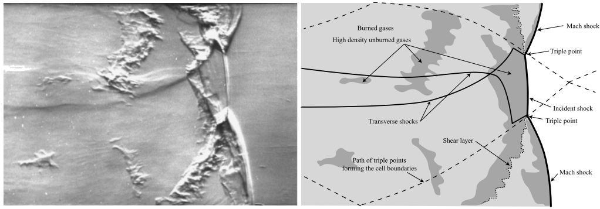

---
# Preliminary Proposal
---
**Mick Carter**
09 November 2018
Motivation
Source: M. Coleman, “Overview of Pulse Detonation Propulsion Technology,” Chemical Propulsion Information Agency, Columbia, MD, Tech. Rep. April, 2001.
Motivation
Pulse Detonation Engines (PDE)
Cycle diagram courtesy of Derek Bean
Background
Anatomy of a Detonation

Source: M. I. Radulescu, G. J. Sharpe, C. K. Law, and J. H. S. Lee, “The hydrodynamic structure of unstable cellular detonations,” J. Fluid Mech., vol. 580, no. 2007, p. 31, 2007.
Background
Mixture Chemistry Effects
Source: M. I. Radulescu, G. J. Sharpe, C. K. Law, and J. H. S. Lee, “The hydrodynamic structure of unstable cellular detonations,” J. Fluid Mech., vol. 580, no. 2007, p. 31, 2007.